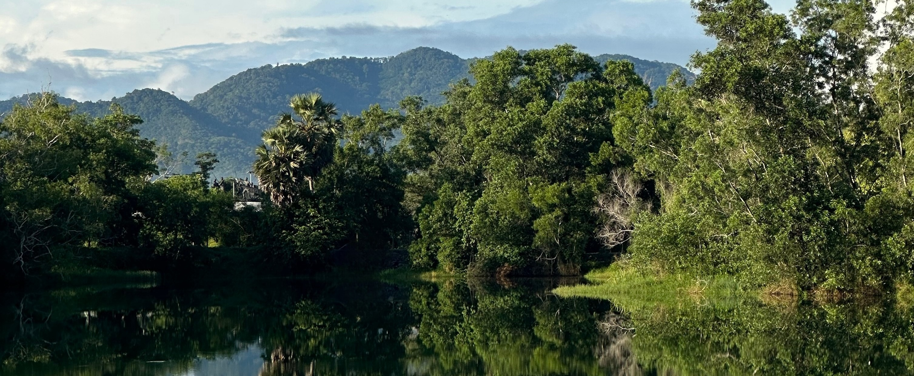
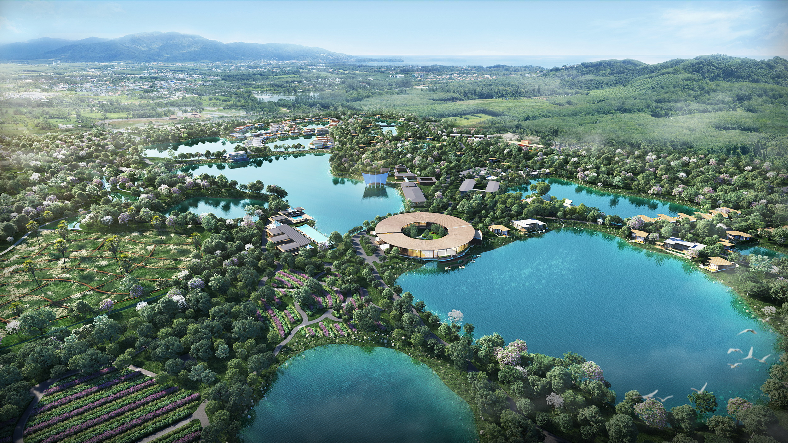
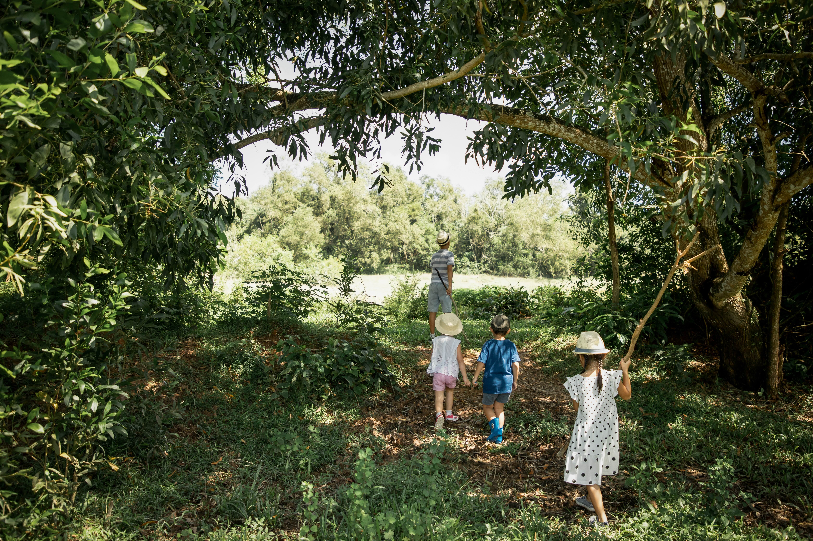
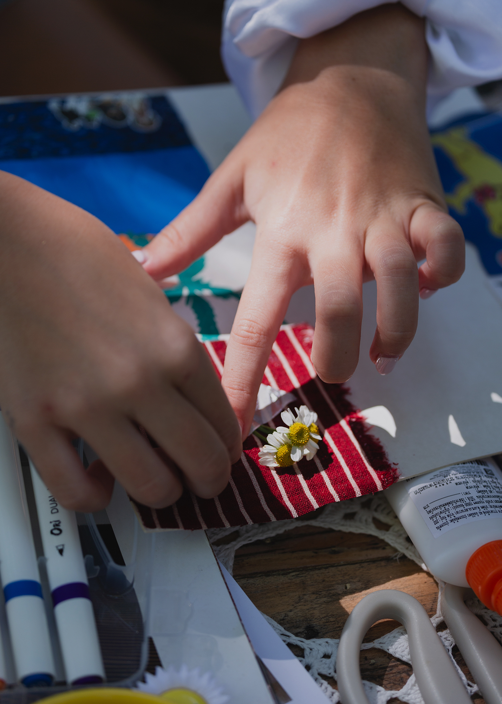
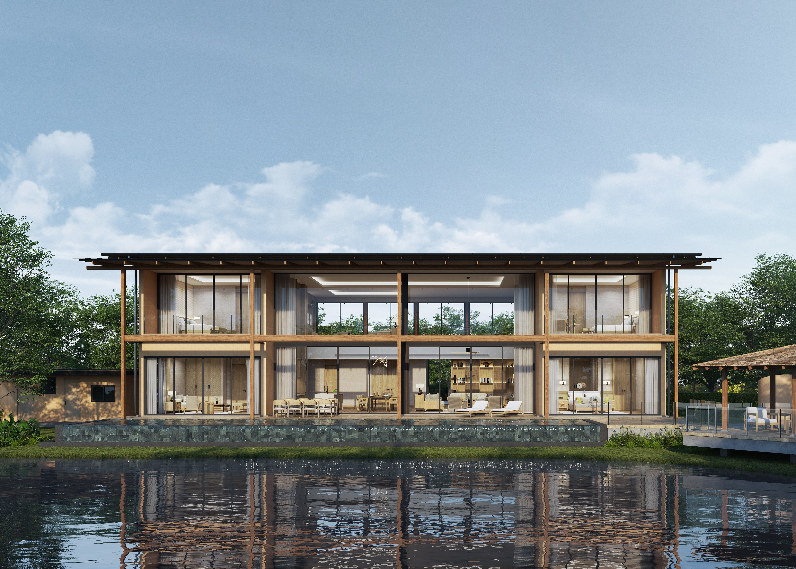
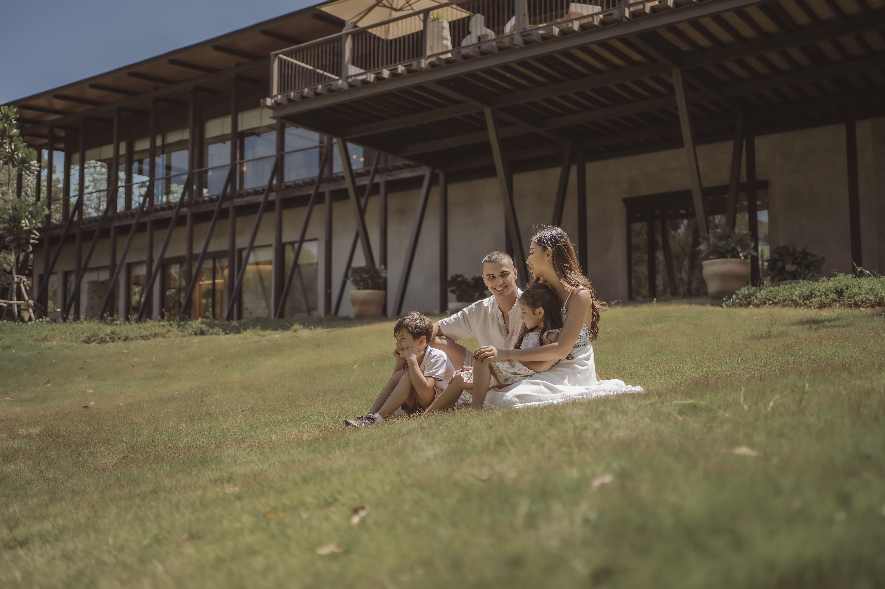
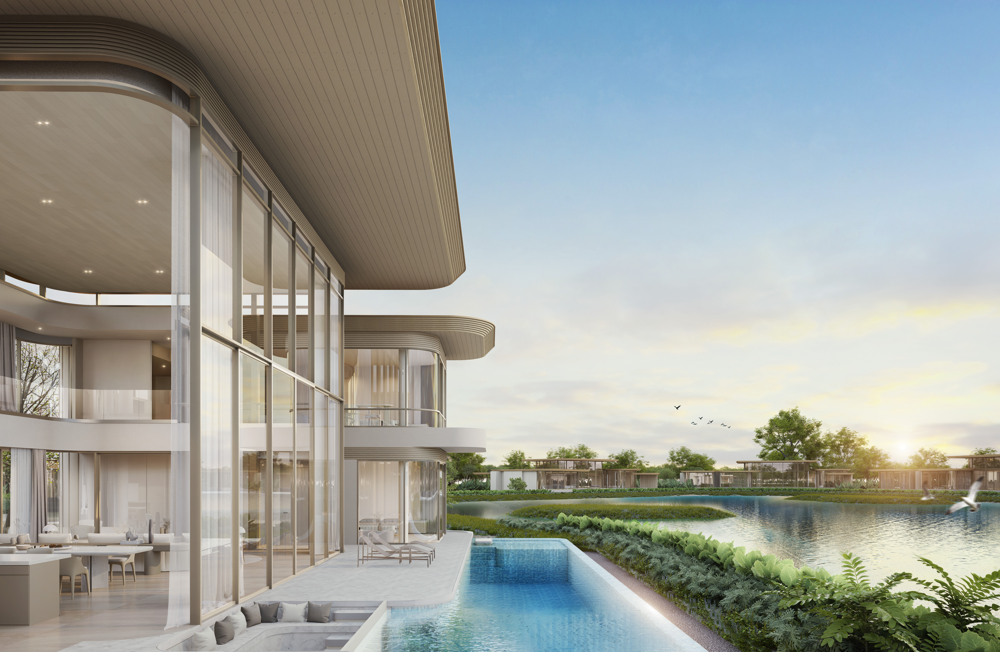

01
Vananda · Montara's Wellness Brand · Step Three · April 2026
Add Depth
to the Brand.
From wellness experiences — to a way of living.
Vananda is Montara's wellness brand. Its first two outlets open at Trisara and Tri Vananda. Step one defined the territory; step two gave the brand its name and voice. This presentation opens step three — beginning with a recap of the work to date and the business case for identity-driven brands.
Montara Hospitality Group
Confidential · For Board Review
Chapter One
Where we are — a summary of steps one and two.
A brief recap of the two presentations that brought us to this moment, so today's recommendation can be read in the full strategic context.
I
02
The Vananda Brand Development — Three Steps
The first two steps defined the brand. This one gives it depth.
Step 01 · Completed
The Strategic Case
Portfolio context. Market analysis. White space identification. Montara's right to win. The territory Vananda would occupy — defined and defended.
Step 02 · Completed
The Brand Defined
Name, essence, positioning, architecture. Verbal and visual language direction. The brand, on paper, as a coherent system of belief.
Step 03 · Today
Add Depth to the Brand
How the brand operates as a lived system. The proof case from other categories. The operational mechanisms. The identity system that carries it.
03
Step 01 Recap · The Montara Ecosystem
Five category-leading brands — each built on belief, not marketing.
Trisara
Luxury Resort Benchmark
The only Thai luxury resort in Phuket that competes with Aman and Rosewood. Understated, private, rooted in Thai sensibility.
Anchors Montara's international credibility.
Tri Vananda
Wellness Community
Pioneer of world-class wellness community living in Phuket. Long-term residential, longevity-integrated, multigenerational by design.
Positions Montara at the intersection of wellness, community, and legacy.
Phuket's first Michelin-starred restaurant. A product of craft, discipline, and devotion to place — never commercial ambition.
The cultural and emotional expression of the group.
Praya Palazzo
Heritage Hospitality
A living historical landmark of Thai–Italian architecture and riverside legacy. Stewardship, not development.
Positions the group as custodian of heritage, not only luxury.
Clinique La Prairie
Medical Longevity · 2026
The world's most trusted longevity authority. Science-led, protocol-based, globally credible.
Medical depth alongside Vananda's human depth.
04
Step 01 Recap · The Strategic White Space
One quadrant remains unclaimed — and structurally ours to occupy.
Existing global leaders cannot enter this space without breaking their own operating models. Vananda's territory is human, long-term, and lived-in.
Life System Experience
Transaction Experience
Clinical · Structured
Human · Intuitive
Aman Wellness
Six Senses
COMO Shambhala
Equinox
Remedy Place
Clinique La Prairie
Vananda
Human · Long-term · Lived-in — the least crowded, most defensible position in global luxury wellness.
05
Step 01 Recap · Montara's Right to Win
No other group holds all five.
- — A stewardship-led ownership mindset (Montara)
- — Proven credibility in hospitality excellence (Trisara)
- — A living wellness community platform (Tri Vananda)
- — Integrated food, land, and cultural systems (PRU)
- — A long-term partnership with medical authority (Clinique La Prairie)
This brand cannot be licensed, franchised, or retrofitted. It must be lived into existence — which aligns with Montara's operating DNA.
06
Step 02 Recap · The Brand Defined
Name. Essence. Position. Architecture.
The Name
Vananda
The bliss found within nature. Joy that requires no performance.
The Essence
Reconnection as a way of living.
Returning to balance. Sustaining wellbeing over time.
The Position
Lived Integration.
Daily life. Nature. Community. Quiet longevity.
The Tagline
A Philosophy of Living Well.
The single sentence that carries the brand.
The brand voice, palette, and logo direction were established in Step 02. What remains — and what this presentation addresses — is how the brand is lived, felt, and repeated until it becomes the philosophy people choose.
First two outlets
Vananda at Trisara
Vananda at Tri Vananda
Existing spa (Trisara) and new multi-gen wellness centre (Tri Vananda). Both currently in development.
07
Step 02 Recap · Vananda Within the Ecosystem
Three settings. Three roles. One continuous philosophy.
Trisara
Inspiration & Reconnection
Morning rituals, immersive ecotherapy, refined nature-based luxury. Where guests first encounter Vananda.
Tri Vananda
Community & Lived Integration
Shared daily rhythms, regenerative farming, intergenerational participation. Where Vananda becomes inseparable from how you live.
Clinique La Prairie
Clinical Structure & Medical Authority
Diagnostics, longevity science, measurable outcomes. The evidence-based anchor — distinct from, and complementary to, Vananda.
One ecosystem. Distinct roles. No blurring. If Clinique La Prairie optimises life, Vananda gives life texture, rhythm, and belonging.
08
The Question This Presentation Answers
The brand is defined. How do we give it depth?
A defined brand is a blueprint. A brand with depth has gravity. What follows is the first part of the argument — the business case from another category that proves identity-driven brands outperform on price, retention, and expansion.

09
Chapter Two · Case Study
Equinox — the business case for identity.
A case study in how identity-driven brands outperform functional competitors on price, retention, and category expansion. Presented on its own terms — so its lessons land before interpretation.
II
10
The Equinox Story
From one Upper West Side gym (1991) to one of the most powerful lifestyle brands in the world.
Founded in 1991 by Danny and Lavinia Errico, Equinox opened as a single fitness club on Manhattan's Upper West Side. For its first decade, it grew slowly — four clubs by 1999.
The turning point was not operational. It was perceptual. Beginning in the early 2000s, the brand repositioned itself from "a better gym" to "a way of being" — and the business transformed behind the repositioning.
Today Equinox Group operates approximately 150 clubs across North America, the UK, and the Middle East, generates over a billion dollars annually, and has extended its brand into hotels, private clubs, and branded residences.
The Strategic Pivot
"Equinox stopped selling fitness and started selling a version of self. Every downstream metric followed."
— Authors' synthesis from Forbes, WWD, BoF, Skift Research
Sources: Equinox Group, Forbes, WWD, Business of Fashion, Skift Research (2019–2024).
12
Equinox by the Numbers
Identity-driven positioning commands prices functional competitors cannot charge.
~US$260
Average monthly membership (Equinox standard) — versus industry average ~US$50 for full-service US gyms.
~US$40k
Annual fee for E by Equinox, the flagship private tier at Hudson Yards — initiation on top.
~70%
Annual member retention — versus industry average of ~50%. Members stay, and keep paying.
~150
Clubs worldwide across flagship metros: New York, London, LA, Toronto, Miami, Dubai.
~460k
Active Equinox members — a small audience, deliberately. Scarcity is part of the product.
US$1B+
Estimated annual revenue (Equinox Group, pre-pandemic baseline, maintained through 2023).
The business outcome of selling identity rather than service: five-to-six times the price per unit, higher customer permanence, and a brand that can be extended without dilution.
13
How Equinox Built the System
Identity was built through five reinforcing moves — each visible in the brand's public record.
The 2016 "Commit to Something" campaign (Wieden+Kennedy) reframed membership as a statement of self. Cannes Lions. Business-wide pivot.
Hudson Yards: US$25 billion, the largest private real estate development in US history — Manhattan's new address for global wealth, rivalling the Plaza district as the city's trophy zip. Related Companies chose Equinox — over Four Seasons, Aman, and Mandarin Oriental — to anchor 35 Hudson Yards. A gym brand became the building's promise.
Lighting, sound, product, staff uniforms, magazine (Furthermore), photography — a single visual grammar enforced across 150 clubs.
Not happiness. Control and self-mastery. A sturdier, harder-to-replicate motivator than the "feel-good" register of competitors.
Equinox Hotels (2019). Equinox Residences at One High Line (2022). Equinox+ content platform (2020). Each extension reinforced the identity.
14
The Category Takeaway
"Identity-driven brands command five to six times the price of functional equivalents, retain customers roughly forty percent longer, and extend into adjacent categories — hotels, residences, media, content — without losing coherence."
Fitness
Equinox vs. 24 Hour Fitness — 5–6× price, 40% longer retention, successful extensions into hotel, residences, media.
Hospitality
Aman vs. Four Seasons — roughly 3–4× ADR, category-defining retention, extensions into Aman New York, Aman Residences, Aman Skincare.
Social / Wellness
Soho House vs. conventional members' clubs — premium membership fees, global extensibility, property portfolio built on the brand.
The pattern is category-agnostic. The mechanism is identity — built systematically, enforced consistently, extended carefully.
17
The Market Has Already Arrived
Integrated wellness lifestyle is the fastest-growing category in global real estate and hospitality.
US$438B
Global wellness real estate market — 2023 scale, more than 3× its 2017 value.
18.1%
CAGR of wellness real estate, 2019–2023 — the fastest-growing segment within the global wellness economy.
10–25%
Price premium commanded by wellness-integrated residences over comparable stock.
US$6.3T
Global wellness economy — now larger than global pharmaceuticals.
Asia-Pacific
Fastest-growing regional wellness real estate market — Thailand among its five most watched destinations.
Zero
Thai-owned brands positioned as the integrated, multigenerational wellness lifestyle of record. The field is open.
Sources: Global Wellness Institute — Wellness Real Estate Report 2023, Global Wellness Economy Monitor 2023. The numbers confirm what the case study suggested: the category is already here. The question is who owns the Thai chapter.
18
Chapter Three · The Translation
From the lesson — to Vananda.
The previous chapter is specific. Its mechanism is not. What follows is the translation of that mechanism into the only setting Vananda was ever built for — the multi-generational family, at home in a Thai landscape, cared for by Thai wisdom and Thai craft.
III
19
The Method Beneath the Case · Three Conditions, Universal
Strip away the logo, the city, the demographic. A method remains.
Three conditions reinforce one another. Each is the universal mechanism behind every identity-driven brand — Equinox, Aman, Soho House, the Serenbe model that follows. Each one will be answered in a Vananda-specific shape later in this chapter.
Condition 01
Identity over function
The brand answers who the member is becoming — not what the service delivers. Membership is a statement, not a transaction.
Condition 02
Consistency over volume
A single visual, verbal, and behavioural grammar — enforced across every setting. The brand is recognised by its repetition, not its reach.
Condition 03
Extension through repetition
New categories are earned by saying the same thing, more deeply. Each extension strengthens the centre — never dilutes it.
This is the universal frame. The same three conditions return at the end of this chapter — answered for Vananda's specific reality: the multigenerational family, on Thai land.
20
A Comparable Model — In Our Category
Serenbe, Georgia. Not a resort. Not a clinic. A way of living, engineered.
Founded in 2004 by Steve and Marie Nygren on a thousand acres of Chattahoochee Hills, Serenbe was built around a single premise — that wellness is not a programme. It is the architecture a family lives inside.
No gym is central. No treatment is central. What is central is the land — over seventy percent of the property preserved in perpetuity — and the rhythm of the day: trails, farm, arts, education, food, community ritual. The brand is the way the community eats, walks, and ages.
Three generations live there at once. Home values have outperformed comparable Georgia communities for two decades. No marketing campaign has ever carried the brand. The residents carry it.
2004
Founded — Chattahoochee Hills, Georgia.
1,000+
Acres — of which over 70% preserved in perpetuity.
3 gens
Multigenerational by design — from playground to hospice.
20 yrs
Of sustained price premium and waitlisted expansion.
Source: Serenbe.com, The New York Times (2019, 2022), Monocle, Wallpaper* — all public record.
21
The Serenbe Inventory
The life, in particular. A wellness community is not an aesthetic — it is an infrastructure.
Eight systems, engineered so daily life becomes a continuous gesture of wellbeing. Drawn from Serenbe's public record, not imagined.
01 · Nature
20+ Miles of Trails
Soft-surface walking loops through pine forest, connecting every hamlet. The daily walk is the central act of the community.
02 · Land
The Organic Farm
On-site vegetable cultivation feeding residents and F&B. The land teaches the table — and, through it, the family.
03 · Environment
Biophilic Design
Nature is woven through the entire plan — forest, ponds, gardens, and tree canopy brought close to every daily moment. Walking happens inside the landscape, not alongside it.
04 · Amenity
A Full Wellness Ecosystem
Spa, gym, pilates, juice shop, coffee shops, restaurants, tennis, swim club, horse stables — plus doctors, chiropractic, orthodontics, wellness services, shops. Everything at the doorstep.
05 · Education
Terra STEAM School
A multi-age education programme, from 8 weeks through 12th grade. Children grow up inside the philosophy — not alongside it.
06 · Belonging
A Connected Community
Programmed gatherings, shared tables, intergenerational participation. Community curated, not accidental — and observably, a reason residents stay.
07 · Culture
Arts & Celebration
A continuous arts programme — residencies, performance, festival. The brain and the body, served side by side.
08 · Home
A Home for Each Family
A home is not a unit but a vessel for a family's life. Each one shaped to the people inside — their generations, their rituals, their needs — so the architecture answers the household, not the other way round.
"Serenbe is not marketed as a wellness brand.
It does not have to be. The infrastructure argues for it, every day, at every intersection."
— Authors' framing, drawn from Serenbe's public record
Source: Serenbe Real Estate (Instagram, March 2026), Serenbe.com — publicly shared material. Referenced for structure, not replicated.
22
Serenbe · The Place & The Life
23
Serenbe · The Amenity Map
Everything a family needs — at the doorstep.
Serenbe's argument is not made in marketing. It is made in adjacency. The full machinery of a wellbeing life is laid out within walking distance of every front door — not concentrated in a clubhouse, but woven through the village.
- — Body spa, gym, pilates, tennis, swim club, horse stables
- — Table organic farm, restaurants, juice shop, coffee shops
- — Care doctors, chiropractic, orthodontics, wellness services
- — Daily life shops, market, post, services within the hamlets
- — Mind arts residency, performance, festivals, gathering grounds
- — Children Terra STEAM school, 8 weeks through 12th grade
24
The Translation — at Tri Vananda
Each of the eight systems has an answer already drawn in the Tri Vananda masterplan.
Four are already in the architectural drawings. Three are in active development — led by the wellness ecosystem, Vananda's primary role inside the masterplan. One remains deliberately open — the space the brand has left to grow into.
20+ miles of soft-surface trails through pine forest.
1.2 km forest-bathing transition linking the wellness centre and residences—extending into farm and canopy trails, lakes, and forest landscapes.
In Masterplan
On-site vegetable cultivation; farm-to-table programme.
The Farm at Tri Vananda — agrihood at the centre, seed-to-spoon philosophy already embedded in the masterplan.
In Masterplan
03 · Environment
Biophilic Design
Biophilic design governs the plan — forest, garden, and pond drawn through every passage of the day.
Lake at the centre, forest threading every villa, gardens and water at every turn — biophilic design embedded in the masterplan. The landscape is the architecture.
In Masterplan
04 · Amenity
Wellness Ecosystem
Spa, gym, pilates, juice shop, clinics, F&B, tennis, swim, stables, shops.
Vananda's Primary Role
Reception, wellness studio, treatment zone, social aquathermal, fitness centre, outdoor sport hub, meditation hall — plus Clinique La Prairie as medical authority. The operating heart of the community — Vananda's central contribution to the masterplan.
In Development
05 · Education
Multi-Age School
Terra STEAM School, 8 weeks through 12th grade.
An educational dimension remains open — a direction the brand has deliberately left for future programming and potential partnership.
Future Direction
06 · Belonging
Connected Community
Programmed gatherings; intergenerational participation.
Community centre, shared meals, multi-generational programming — the beating heart of the Tri Vananda role in the ecosystem.
In Development
07 · Culture
Arts & Celebration
Residencies, performance, festival.
Local Roots — a monthly community gathering through the high season. Neighbours, music, a long table in the garden, children running between the trees. The seed of a wider arts and festival programme — Thai craft, performance, and seasonal celebration to follow.
In Development
08 · Home
A Home for Each Family
Hamlets, each with its own architectural character — variety so families can find their fit.
Each villa shaped around the family that will live in it — generations, rituals, daily rhythms translated into bedrooms, kitchens, courtyards, quiet rooms. The home is not chosen. It is composed.
In Masterplan
Four
of the eight systems already drawn in the Tri Vananda masterplan.
Three
in active development as Vananda brand programming — including the wellness ecosystem at the core.
One
deliberately open — the space the brand continues to grow into.
The infrastructure of a category-defining wellness community, substantially in place — before a single brand campaign runs.
25

The Tri Vananda Masterplan
The eight systems, realised on the land.
Aerial view — Tri Vananda, Phuket. The masterplan as drawn: lake, wellness centre, farm, residences, hamlets, all within walking distance.

03 · Environment
Biophilic Design

04 · Amenity
Wellness Ecosystem
Future Direction
05 · Education
Multi-Age School

06 · Belonging
Connected Community

07 · Culture
Arts & Celebration

08 · Home
A Home for Each Family
26
The Thai Market, Reshaped
The current Thai wellness market is a market of retreats. Vananda is built for a different category altogether.
Thailand's wellness leadership — Chiva-Som, Kamalaya, RAKxa, and the resort spas of Phuket, Koh Samui, and Chiang Mai — built the first generation of Asian wellness hospitality. Each is excellent at what it does. None is positioned for what the category is becoming.
The Access Model — Three Tiers
Tier 01 · Indicative
Open Experiences
Selected outlets and experiences open to non-members. Scope and format still in definition — to be confirmed by the commercial team prior to launch.
Tier 02 · Core Model
Yearly Membership
The core recurring commercial model — multi-tier, family-oriented, renewed annually. Designed to compound retention across generations.
Tier 03 · The Patrons
A Home Within the Philosophy
Families who take a residential villa at Tri Vananda live alongside the brand year-round — the most natural and deeply-engaged Vananda audience by virtue of proximity. The household becomes a daily relationship across F&B, programmes, the wellness ecosystem, and Clinique La Prairie touchpoints — layered onto a life lived on the property.
Tiers 01 and 02 remain in commercial definition. The Patrons tier — Vananda's relationship with Tri Vananda residents — is the deepest by structure: proximity, frequency, and family commitment, all already in place.
Today's Thai Wellness Market
A retreat to visit — one week, twice a year.
A layered access model — from selected open experiences, to yearly membership, to lifetime inclusion for residents.
The individual — or the couple.
The full multigenerational family — grandmother to grandchild.
A single discipline — detox, fasting, medical, longevity.
Integrated — body, mind, land, food, rhythm, ritual.
A single resort — bounded, episodic.
An ecosystem — Trisara, Tri Vananda, and the outlets beyond.
ADR plus programme package.
Hospitality, residential, yearly memberships, open experiences, F&B, and partnership — layered across tiers.
Episodic — a visit, a departure.
Perennial — year on year, deepening with time.
"The competitors optimise an existing category. Vananda's economics are built on a different one."
27

Open Experiences
Selected outlets and experiences open to non-members — a first taste of the philosophy.

Yearly Membership
The recurring family-oriented model — renewed annually, deepening across generations.

A Home Within the Philosophy
Tri Vananda residents — the natural patrons of Vananda. The most engaged households, the most layered relationship, by proximity to the brand they already chose to live alongside.
28
Before the Brand — What the Family Truly Wants
A multi-generational family does not come to Vananda for wellness.
It comes for a life in balance — one that deepens across generations, and improves year upon year.
At Trisara
Inspiration & Reconnection
Morning rituals, immersive ecotherapy, refined nature-based luxury. The first encounter — where balance is rediscovered, and a different rhythm becomes imaginable.
At Tri Vananda
Community & Lived Integration
Shared daily rhythms, regenerative farming, intergenerational participation. Where the rhythm becomes a way of living — and the family, held inside it, quietly improves.
Which Leads To
To hold balance across years and generations, the brand must carry five qualities — together, or not at all.
31
The Three Conditions, Lived at Vananda
The same three principles — answered for the multigenerational family, on Thai land.
The mechanism is universal. The expression is local. Each condition introduced earlier in the case study returns here, in the specific shape Vananda gives it — multigenerational, multidimensional, lived as a way of being.
01
Identity over function
A multigenerational way of being.
The family does not buy a programme. They choose a way of living — held together across grandparent, parent, and child. Not a demographic — a bloodline. Not a treatment — a standard the family renews because it cannot imagine life otherwise.
02
Consistency over volume
One grammar, integrated across the whole of life.
Body, mind, land, food, rhythm, ritual — integrated into a single way of living, not concentrated in a treatment room. Trisara, Tri Vananda, and every outlet to come — one atmosphere, one promise. Daily and seasonal, not episodic.
03
Extension through repetition
Each new outlet says the same thing, more deeply.
Trisara today. Tri Vananda tomorrow. The outlets and partnerships beyond — each strengthening the centre, never diluting it. The brand earns its next category by repeating its truth, not stretching to fit it.
Universal mechanism. Local mastery. The work of this step is to make the third condition — consistency — visible across the whole brand. The first two are already inherent to the land, the family, the portfolio.
32
Preliminary Audience Model · Vananda at Tri Vananda
Flagship · First Property
A 20 / 50 / 30 audience architecture — Thai roots, international residency, activated through the Montara network.
Indicative segmentation for the Vananda at Tri Vananda flagship launch — the first physical expression of the Vananda brand. The 20% provides Thai roots; the 50% reflects the international families who already choose Thailand as their home or base; the 30% imports global credibility through existing Montara relationships. Together, a flywheel a single-market wellness brand cannot build.
70%
Thailand-Based Audience
Local depth across two distinct cohorts — rooted Thai families, and the international families who chose Thailand
12%
Bangkok HNWI Families
Established wealth, family business dynasties, leading Thai-Chinese family groups and regional C-suite households. The historical core of Thai luxury demand — and a meaningful but minority share of Phuket's residential reality.
8%
Regional Thai Families
Hua Hin, Chiang Mai, Pattaya, Khao Yai, and regional trading families — introduced via referral through the Bangkok base.
50%
International Living in or Through Thailand
25%
Bangkok-Based International & Globally Mobile Families
Long-resident international executives, regional entrepreneur families, relocating tech and finance households, and globally mobile families using Thailand as their Asia home-base. The fastest-growing affluent cohort — and the one most naturally aligned with Vananda's values.
15%
Phuket International HNWI & Second-Home Holders
European, North American, Australian, and regional Asian buyers already rooted in the Phuket landscape. Lifestyle migrants and second-home holders for whom proximity drives recurrence.
10%
Regional Asia Mobile Families
Singapore, Hong Kong, Tokyo, Greater China — affluent families who treat Phuket as their preferred wellness retreat in the region. Often the bridge between resort guest and resident.
30%
Montara Ecosystem Network
Global credibility — imported from existing relationships
10%
Clinique La Prairie Guests
Global longevity audience arriving for clinical programmes — introduced to Vananda as the lifestyle layer surrounding the clinical layer.
10%
Trisara Guests
Existing luxury resort clientele extending their relationship with Montara into everyday wellness living.
10%
Tri Vananda Villa Owners' Network
The confirmed anchor of the community. Families who purchase a Tri Vananda residential villa live alongside the Vananda brand year-round — the most natural, frequent, and deeply-engaged Vananda audience by virtue of proximity and shared philosophy. Their referral circle extends this community outward.
"Vananda's flagship does not open to a cold market.
It opens to a pre-formed community — and has only to deepen it."
— Authors' framing of the launch posture
Preliminary · For internal planning · Indicative model for the Vananda at Tri Vananda launch · Subject to external validation prior to open
33
The Position, In One Sentence
The first-choice support system for a multi-generational family choosing to live well in Thailand — in balance, together, across generations.
Not a resort. Not a spa. Not a clinic. A support system for a life lived well — open every day, deepening every year, generational by design. Anchored in Thai land, Thai wisdom, and Thai craft. Open to every family, from Bangkok to Singapore to London, that chooses to live by this standard.
The Tagline, Evolved
A Philosophy of Living Well. Held together. Carried across generations — and across the long, ordinary years that make a life.
34

35
End of Step 3 · Add Depth to the Brand
Brand Identity — to follow in Step 4.
Next · Step 4 Presentation Deck
36